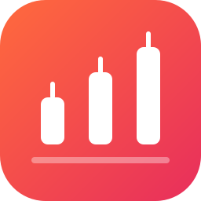
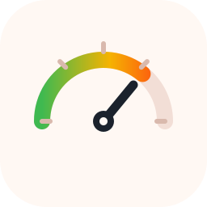
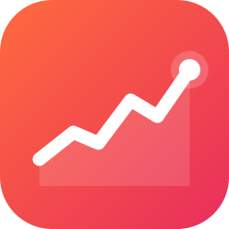
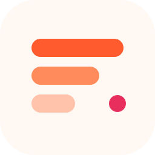

5 个方向，统一 256×256 圆角方形。每个方案都按 112 / 64 / 32 / 16 px 检查浏览器标签可读性；浅色、暗色各一版。
Light · 浅色




Dark · 暗色
Browser tab · 16px 实际大小对比
说明：所有方案都是 256×256 SVG，圆角 58；浏览器 16px 通常只能保留轮廓。01/03 在 16px 最稳，02 最有产品含义，05 最有旧品牌延续性。
推荐：01 阶梯 K 线 作为主标（行情语义最直接、16px 最好认）；02 仪表盘 作为“恐贪指数”栏目或报告页的辅助图形；05 韭字格 如果想保留“韭”这个记忆点。
选定后我会补 favicon.ico（16/32/48）、apple-touch-icon 180px，以及侧栏/登录页的横版 lockup。